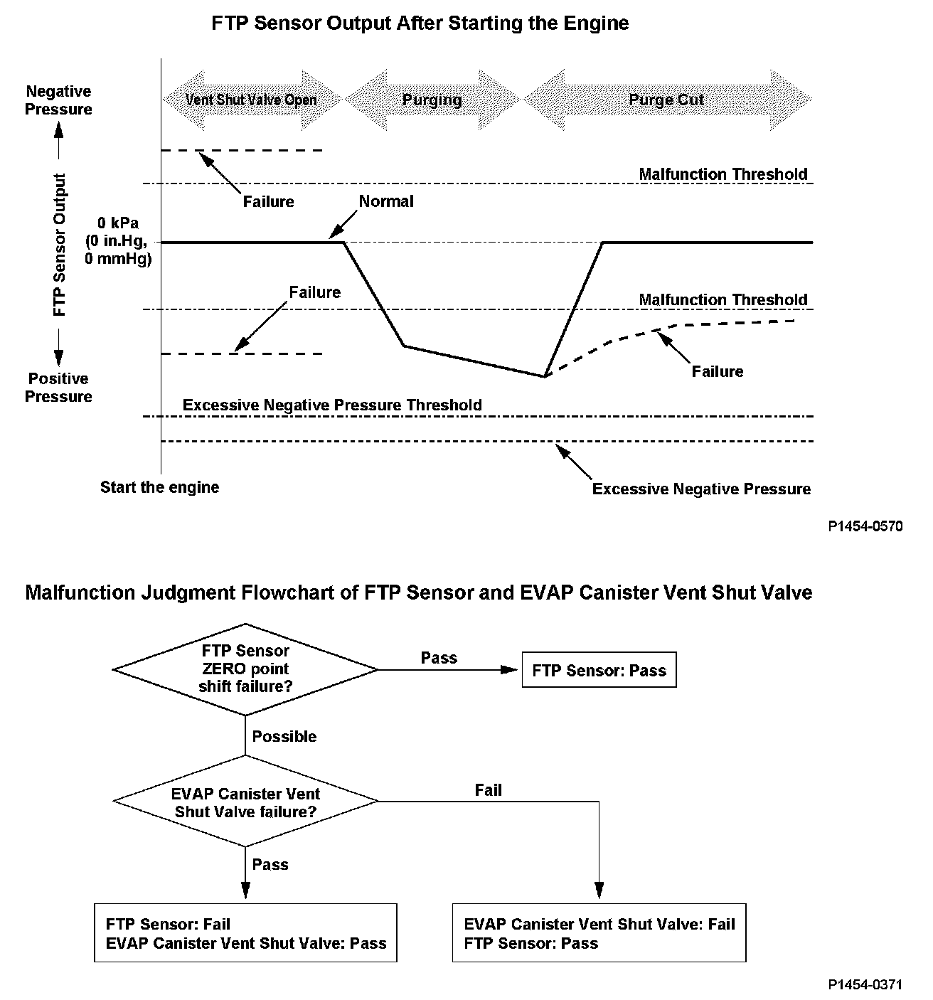
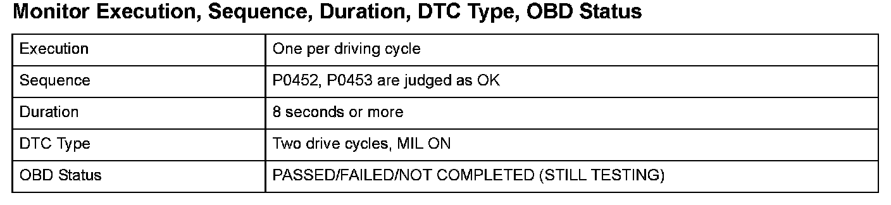
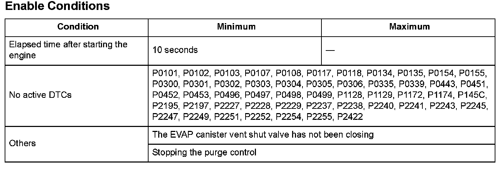

Advanced Diagnostics
DTC P1454: Fuel Tank Pressure (FTP) Sensor Circuit Range/Performance Problem
General Description
The fuel tank pressure is about 0 kPa (0 in.Hg, 0 mmHg) when starting a cold engine. When the fuel tank pressure (FTP) sensor output value is out of a specified range and the powertrain control module (PCM) judges that there's no other cause [no evaporative emission (EVAP) canister vent shut valve failure, etc.] of the FTP sensor zero point shift, the PCM detects an FTP sensor malfunction.
However, if the FTP sensor output when starting the engine is a prescribed negative value or less (excessive negative pressure is detected), the malfunction judgment should be done as follows because it is difficult to distinguish the FTP sensor zero point shift (P1454) from the EVAP canister vent shut valve failure (P2422).
1. If either Temporary DTC P1454 or P2422 is not stored, the PCM stores both DTCs.
2. If both P1454 and P2422 Temporary DTCs are stored and an excessive negative pressure is detected, both P1454 and P2422 DTCs are stored.
3. If either Temporary DTC P1454 or P2422 is stored and an excessive negative pressure is detected, the PCM stores the DTC of the temporary DTC that was stored.

Monitor Execution, Sequence, Duration, DTC Type, OBD Status

Enable Conditions
Malfunction Threshold
One of these conditions is met.
- The FTP sensor output fluctuates by 0.6 kPa (0.1 in.Hg, 5 mmHg) or more, or-0.6 kPa (-0.1 in.Hg, -5 mmHg) or less for at least 3 seconds.
- The FTP sensor output value is -1.3 kPa (-0.3 in.Hg, -10 mmHg) or less for at least 3 seconds.
Confirmation Procedure with the HDS
Do the EVAP CVS ON in the INSPECTION MENU with the HDS.
Driving Pattern
Start the engine, and let it idle until the radiator fan comes on.
Diagnosis Details
Conditions for illuminating the MIL
When a malfunction is detected during the first drive cycle, a Temporary DTC is stored in the PCM memory. If the malfunction recurs during the next (second) drive cycle, the MIL comes on and the DTC and the freeze frame data are stored.
Conditions for clearing the MIL
The MIL will be cleared if the malfunction does not recur during three consecutive trips in which the diagnostic runs.
The MIL, the DTC, the Temporary DTC, and the freeze frame data can be cleared by using the scan tool Clear command or by disconnecting the battery.